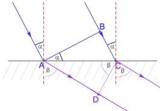
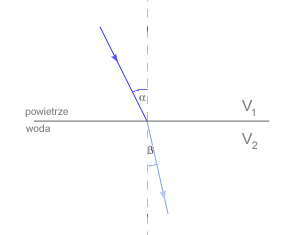
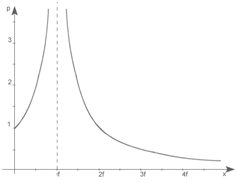
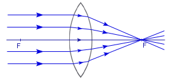
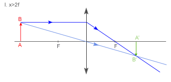
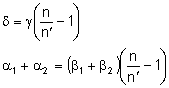
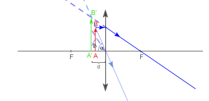

|
|||
|
| • Mechanika » Kinematyka, Dynamika, Praca, moc, energia, Grawitacja, Ruch obrotowy, Statyka, Relatywistyka • Fizyka molekularna i ciepło » Termodynamika, Gazy, Ciecze, Ciała stałe • Elektryczność i magnetyzm » Elektrostatyka, Pole elektrostatyczne, Prąd elektryczny stały, Magnetyzm, Elektromagnetyzm • Zjawiska falowe » Ruch drgający i falowy, Akustyka, Drgania i fale elektromagnetyczne, Optyka • Elementy fizyki wpółczesnej » Dualizm korpuskularno-falowy, Fizyka atomowa, Fizyka jądrowa • Astronomia » Astronomia • Zagadnienia matematyczne » Wektory, Pochodna funkcji, Logarytmy • Tablice » Jednostki wielkości fizycznych, Właściwości fizyczne, Właściwości elektromagnetyczne i falowe, Stałe fizyczne, Tablice matematyczne • O stronie » Autorzy, Bibliografia | |
|
|
Widmo elektromagnetyczne
Fale elektromagnetyczne, mające zastosowanie w radiofonii, telewizji i radarze stanowią tylko część pełnego zestawienia, zwanego widmem elektromagnetycznym. Podział widma elektromagnetycznego na określone przedziały częstotliwości i odpowiadające im przedziały długości fali, wynika ze sposobu wytwarzania i zastosowania objętych nimi fal. Przedziały te nie są jednakże ściśle ograniczone i wzajemnie zachodzą na siebie, przy czym niektóre rodzaje fal można wytwarzać różnymi sposobami. Światło monochromatyczne to światło ściśle określonej długości. Prędkość światła
Światło, tak jak i każda fala elektromagnetyczna, rozchodzi się w próżni ze stałą prędkością, która jest równa c=299792 km/s, niezależnie od jego barwy, czyli od długości fali. Twórcą teorii fal elektromagnetycznych był J. Maxwell, który już w 1864 roku przewidział ich istnienie. Przewidział też, że w próżni prędkość rozchodzenia się tych fal będzie wynosić Znając stałe wykonał rachunek i obliczył c. Wynosiło ono około 300 000 km/s. Maxwell stwierdził, że światło jest taką falą elektromagnetyczną, której długość leży w obszarze pomiędzy 0,38-0,76*10 -6m. Prędkość v rozchodzenia się fal w ośrodku innym niż próżnia jest mniejsza i zależy od własności elektrycznych i magnetycznych tego ośrodka. Stosunek prędkości światła w próżni do prędkości światła w danym ośrodku nosi nazwę współczynnika załamania tego ośrodka. 23 lata później w 1887 roku Heinrich Hertz po raz pierwszy wytworzył fale elektromagnetyczne i równocześnie zademonstrował urządzenie do ich odbioru, rozpoczynając tym samym "erę radia i telewizji". Niecałe 10 lat po odkryciu fal radiowych przez Hertza, Włoch Guglielmo Marconi skonstruował telegraf "bez drutu". Informacje przesyłano alfabetem Morse'a. W 1906 roku udało się za pomocą fal radiowych przekazać ludzką mowę, a już 1914 roku ruszyła w Belgii pierwsza rozgłośnia radiowa. Nieco później rozpoczęto prace nad przekazywaniem obrazów. Pierwsze próby z przesyłaniem obrazów ruchomych rozpoczęto w latach dwudziestych ubiegłego wieku. Od 1936 roku w Anglii rozpoczyna się nadawanie regularnych programów telewizyjnych. Charakterystyczną cechą fal elektromagnetycznych jest ich możliwość przemieszczania się w próżni, czym w zasadniczy sposób różnią się od fal mechanicznych, które mogą się rozchodzić jedynie w ośrodkach sprężystych. Różni je od nich także olbrzymia prędkość, z jaką się poruszają. Prędkość światła w próżni w swobodnej przestrzeni jest jedną z podstawowych stałych fizycznych. W próżni stanowi ona maksymalną prędkość rozprzestrzeniania się oddziaływań fizycznych. Prędkość światła w ośrodku zależy od częstotliwości. W tym wypadku należy rozróżnić prędkość:
METODY POMIARU PRĘDKOŚCI ŚWIATŁA Metody pomiaru prędkości światła dzielą się na bezpośrednie i pośrednie. Już rzymski poeta i filozof Lukrecjusz przekonywał w I wieku p.n.e., że światło biegnie z ogromną prędkością. Po raz pierwszy prędkość światła próbował zmierzyć włoski fizyk Galileo Galilei, zwany dziś Galileuszem, na początku XVII wieku. Wybrał się mianowicie nocą za miasto ze swym pomocnikiem i dwoma latarniami. Sam stanął z jedną na jednym wzgórzu, zaś jego pomocnik, z drugą latarnią, wspiął się na inne wzgórze. Po zasłonięciu obu latami Galileusz odsłonił swoją. Na ten sygnał jego pomocnik miał również odsłonić swoją latarnie. Gdyby światło biegło ze skończoną prędkością - rozumował Galileusz - to zanim dobiegłoby od jego latarni do pomocnika, a następnie, po odsłonięciu jego latarni, od jego latarni do niego, musiałby upłynąć pewien okres czasu. Niestety, za każdym razem Galileusz dostrzegał błysk latarni pomocnika równocześnie z odsłonięciem swojej latarni. Stąd wypływa wniosek, że: albo światło biegnie nieskończenie szybko, albo jego prędkość jest skończona, ale tak -wielka, ze metoda zastosowana- przez Galileusza -jest za mało dokładna. Od czasu Galileusza wyznaczanie wartości prędkości światła było podmiotem prac wielu fizyków. Sprawę rozstrzygnął już w 1676 roku duński astronom Olaf Romer, opierając się na swych obserwacjach zaćmień księżyców Jowisza. Planeta Jowisz, największa planeta Układu Słonecznego, ma 22 księżyce. Cztery największe spośród nich:
Zostały one odkryte przez Galileusza w 1610 roku. Obiegają one planetę na płaszczyźnie bardzo bliskiej płaszczyzny Jowisza w jego ruchu dookoła Słońca. Wskutek tego podczas każdego obiegu dookoła planety księżyce wchodzą w cień Jowisza, ulegając tym samym regularnym zaćmieniom. Romer zauważył, że obserwowane z Ziemi odstępy czasu miedzy dwoma kolejnymi zaćmieniami maleją, gdy Ziemia w swym ruchu po orbicie zbliża się do Jowisza, rosną natomiast, gdy Ziemia się oddala. Zaćmienia możemy uważać za sygnały świetlne wysyłane w różnych odstępach czasu, a więc -jako wskazania swego rodzaju zegara. I oto z Ziemi stwierdzamy, że zegar ten chodzi nie regularnie: śpieszy się, gdy Ziemia się do niego zbliża, opóźnia natomiast, gdy Ziemia się od niego oddala. W sytuacji, gdy Ziemia zbliża się prawie wzdłuż linii prostej łączącej ją z Jowiszem obserwowane z Ziemi przyśpieszenie naszego "zegara" wynosi niespełna 2 s. dla Io i prawie 15 s. dla Callisto. Gdy Ziemia oddala się, tyleż wynoszą opóźnienia naszego zegara. Są to wartości maksymalne, bowiem w sytuacjach pośrednich, gdy Ziemia biegnie ukośnie względem prostej łączącej ją z Jowiszem, różnice są mniejsze. Obserwując nasz zegar w ciągu całego roku zarejestrować można globalne skutki tych efektów. Na podstawie pierwszych wielomiesięcznych obserwacji Romer oszacował w ten sposób sumaryczne opóźnienie na około 22 min. Tyleż powinno wynosić sumaryczne przyspieszenie. Z tego wynika, że: gdyby światło biegło z nieskończenie wielką prędkością, to żadnych opóźnień, ani przyśpieszeń byśmy nie stwierdzili. Skoro, bowiem regularnie wysyłane sygnały docierają do nas raz nieco za późno, raz nieco za wcześnie, wobec tego muszą one stracić nieco czasu, by nas dogonić. Zatem sygnały biegną ze skończoną prędkością. Jakościowo problem został rozstrzygnięty: światło biegnie ze skończona prędkością. Można to obliczyć: należy dokładnie znać ów czas opóźnienia ( Romer oszacował go na około 22min., czyli 1320s.) i średnicę orbity Ziemi w jej ruchu wokół Słońca. Według Romer'a prędkość światła wynosiła: 200 000km/s. Na podstawie współczesnych pomiarów wiemy, że ów czas opóźnienia wynosi ok. 1000 s, a średnia odległość Ziemi od Słońca ok.. 150 milionów kilometrów. Wykorzystując te dane dochodzimy do wniosku, że prędkość światła wynosi około:c=300 000km/s. Metoda Romera pomiaru prędkości światła ma swe zalety, ale też i wady. Zaletą jest jej prostota. Do wad należy zaliczyć natomiast żmudną procedurę obserwacji, która wymaga wielkiej systematyczności, oraz konieczność znajomości rozmiarów orbity Ziemi, co wymaga przeprowadzenia odrębnych pomiarów. Nie znając dokładnej średnicy orbity Ziemi możemy na podstawie obserwacji zaćmień księżyców Jowisza dojść jedynie do wniosku, że prędkość światła jest skończona, choć niesłychanie wielka. Po raz pierwszy prędkość światła (w powietrzu) w warunkach całkowicie ziemskich zmierzył w 1849 roku francuski fizyk Armand Hippolyte Fizeau, stosując własną i bardzo dowcipną metodę wirującego koła zębatego. Światło ze źródła biegnie ku płytce pół-odbijającej (i jednocześnie pół-przezroczystej), po czym odbija się od płytki (częściowo, bo część światła przechodzi przez płytkę). Przykładem płytki częściowo odbijającej, a częściowo przepuszczającej jest szyba okienna. Po odbiciu się od płytki wiązka biegnie dalej, przechodząc przez obszar, gdzie obracające się koło zębate tworzy swego rodzaju bramę dla światła, otwierającą się i zamykającą na przemian. Jeśli wiązka przejdzie między zębami, pobiegnie dalej ku zwierciadłu. Po odbiciu się od niego zawróci. I teraz, jeśli światło musiało przebyć długą drogę, a jednocześnie koło wystarczająco szybko się obracało, to wracająca wiązka trafi już na bramę zamkniętą. W tej sytuacji obserwator nic nie zobaczy. Ale jeśli wiązka zdąży wrócić, zanim brama się zamknie, to znowu część jej odbije się od płytki, część natomiast przejdzie na wylot, ku obserwatorowi. Należy, więc odpowiednio ustawić wszystko, po czym zakręcić koło. Z początku, kiedy koło kręci się wolno, wiązka za każdym razem zdąży powrócić do obserwatora. Zwiększając szybkość ruchu obrotowego koła uzyskamy wreszcie, przy dostatecznie wielkiej szybkości obrotów koła, pierwsze zaciemnienie pola widzenia. Oznaczać to będzie, że wiązka już nie zdążyła z powrotem przed zamknięciem bramy. Mierząc odległość między kołem, a zwierciadłem odbijającym (światło przebywa drogę dwa razy większą -tam i z powrotem), liczbę zębów na obwodzie koła oraz mierząc szybkość ruchu obrotowego koła, możemy wyznaczyć prędkość światła. W układzie Fizeau odległość między kołem zębatym a zwierciadłem zawracającym wynosiła 8 630m, koło miało na obwodzie 720 zębów (wszystkie zęby miały jednakową szerokość, równą szerokości przerw między nimi). Pierwsze zaciemnienie pola widzenia zaobserwował, gdy koło wykonywało 12,6 obrotu na sekundę. Obliczona z tych danych prędkość światła (w powietrzu) wyniosła: c=315 000 km/s. W 1862 roku Jean Bernard Foucault opracował metodę, w której zastosował wirujące zwierciadło, co pozwoliło na zmniejszenie odległości między zwierciadłem płaskim, a kołem do kilku metrów. To udoskonalenie pozwoliło na pomiar prędkości światła nie tylko w powietrzu, ale również w innych ośrodkach materialnych, na przykład przeźroczystych cieczach, jak również i w próżni. Albert Abraham Michelson w 1924 roku zmierzył prędkość światła. Wytworzone za pomocą łuku elektrycznego światło biegło pomiędzy dwoma szczytami, Mount Wilson i Mount San Antonio w Kalifornii, pokonując odległość L=35 410+/-3 m. Padając na wirujący układ zwierciadeł, odbijało się od zwierciadła l, przebywało drogę 2L i po odbiciu od zwierciadła 2, które w tym czasie znalazło się w miejscu zwierciadła 3, docierało do obserwatora. Znając częstotliwość, z jaką wirował układ zwierciadeł oraz drogę L można było z dużą dokładnością wyznaczyć prędkość światła. Wynosiła ona: c=(299 796 +/- 0,4) km/s. We współczesnych metodach bezpośredniego pomiaru prędkości światła zachowana jest zasada klasycznej metody Fizeau, lecz światło moduluje się komórką Kerra, a odbiornikiem promieniowania nie jest oko, lecz foto-komórka lub fotopowielacz. Do pośrednich metod pomiaru prędkości światła zalicza się:
Ostatni sposób jest najdokładniejszy. Polega on na wyznaczeniu rezonansu fal centymetrowych w rezonatorze wnękowym o dokładnie znanych rozmiarach lub na pomiarze długości fali interferometrem mikrofalowym, analogicznym do optycznego interferometru Michelsona. Dyfrakcja i interferencja światła
Potwierdzeniem falowej natury promieniowania świetlnego są zjawiska dyfrakcji (ugięcia) i interferencji światła. Zjawisko dyfrakcji można zaobserwować przy przejściu światła przez wąskie szczeliny lub przeszkody. Interferencję światła można uzyskać przez rozdwojenie wiązki promieni pochodzących z jednego źródła i wytworzenie między nimi różnicy dróg, wskutek czego do określonego punktu powierzchni oświetlonej docierają fale świetlne o jednakowej długości i różnicy faz. Po raz pierwszy uzyskał tą metodą interferencję światła Young przez ugięcie fal na dwóch szczelinach. Wiązkę światła jednobarwnego rzucamy przez niewielką szczelinę Q na przesłonę P zaopatrzoną w dwie bardzo wąskie i blisko siebie położone szczeliny (1 i 2). Na ekranie E ustawionym za przesłoną nie otrzymujemy jednak obrazu szczelin, którego można się było spodziewać, lecz wiele jasnych prążków J, zwanych prążkami interferencyjnymi - oddzielonych od siebie ciemnymi przerwami C. Jest to wynik zjawiska interferencji. Do dokładnych pomiarów długości fal świetlnych służy prosty przyrząd, zwany siatką dyfrakcyjną. Jest to płaska płytka szklana o równej grubości, mająca wiele równoległych rys, które odgrywają rolę zasłon, a przerwy miedzy nimi rolę szczelin przepuszczających światło. d - odległość między szczelinami w siatce dyfrakcyjnej (stała siatki) Odczytujemy z rysunku, iż: Korzystając ze warunku na wzmocnienie , otrzymujemy: Jeśli na siatkę pada wiązka światła białego, powstaje widmo światła padającego. 0 - widmo zerowego rzędu 1 - widmo pierwszego rzędu Odbicie światła
Światło przy odbiciu zachowuje się tak samo jak fale mechaniczne. Prawo odbicia
Wyprowadzenie prawa odbicia geometrycznie: Odcinki BC i AD muszą być przebyte w tym samym czasie, więc: Załamanie światła
Światło ulega załamaniu, gdy przechodzi z jednego ośrodka do drugiego.  Światło musi pokonać drogę BC w jednym ośrodku w tym samym czasie, co drogę AD w drugim ośrodku. 
Przekształcamy równanie i otrzymujemy: Prawo załamania
Gdy światło przechodzi z jednego ośrodka do drugiego nie zmienia swojej częstotliwości, zmienia się długość światła. BEZWZGLĘDNY WSPÓŁCZYNNIK ZAŁAMANIA - n n=1 - w próżni i w powietrzu n=1,5 - w szkle n=1,3 - w wodzie Światło przechodząc przez granicę dwóch ośrodków ulega załamaniu. Przechodząc z ośrodka, w którym rozchodzi się z większą prędkością do ośrodka, w którym rozchodzi się z mniejszą prędkością załamuje się do prostopadłej.  Światło przechodząc z ośrodka, w którym rozchodzi się z mniejszą prędkością do ośrodka, w którym rozchodzi się z większą prędkością załamuje się od prostopadłej. Zwiększając kąt padania zwiększa się także kąt załamania. Gdy kąt załamania jest kątem prostym, to kąt padania nazywamy kątem granicznym. Jeżeli kat padania jest większy od granicznego, to zachodzi zjawisko całkowitego odbicia, które znalazło zastosowanie m.in. w światłowodach. Polaryzacja światła
Fala mechaniczna spolaryzowana to taka, że wszystkie cząsteczki ośrodka drgają w jednej płaszczyźnie. Polaryzacji ulegają tylko fale poprzeczne. W przypadku fali elekromagnetycznej polaryzacja polega na uporządkowaniu kierunku natężenia pola. Światło można spolaryzować:

Część promieni świetlnych załamała się pod kątem Korzystamy z prawa załamania: Z rysunku odczytujemy, że: Podstawiamy uzyskaną równość do prawa załamania i otrzymujemy warunek na polaryzację światła. WZÓR BIOTA - właściwa zdolność skręcania - stężenie roztworu - długość drogi przebytej przez światło w roztworze Zwierciadła
Zwierciadła dzielimy na:
ZWIERCIADŁO PŁASKIE x - odległość przedmiotu od zwierciadła y - odległość obrazu od zwierciadła W zwierciadle płaskim powstaje obraz pozorny, to znaczy, że powstał w wyniku przecięcia się przedłużeń promieni odbitych. ZWIERCIADŁO KULISTE
O - środek krzywizny, czyli środek kuli, z której zwierciadło zostało wycięte r - promień krzywizny, czyli promień kuli, z której zwierciadło zostało wycięte F - ognisko zwierciadła, czyli punkt przecięcia promieni odbitych f - ogniskowa zwierciadła, czyli odległość ogniska od zwierciadła Trójkąt OAF jest równoramienny, więc OF=FA. Ze względu na niewielkie rozmiary zwierciadła w porównaniu do promienia, można przyjąć, że , czyli: Zwierciadło wypukłe ma ognisko pozorne. WYBRANE PROMIENIE
OBRAZY W ZWIERCIADŁACH:
Obraz: rzeczywisty, pomniejszony, odwrócony Obraz: rzeczywisty, odwrócony, tej samej wielkości Obraz: rzeczywisty, odwrócony, powiększony Obraz nie powstaje Obraz: pozorny, powiększony, prosty Obraz: pozorny, pomniejszony, prosty Równanie zwierciadła kulistego
Trójkąt ABC jest podobny do trójkąta Natomiast trójkąt ABO jest podobny do trójkąta , więc: Porównując obie równości otrzymujemy: Dzielimy obie strony przez iloczyn xyr: Korzystając z równości: otrzymujemy równanie zwierciadła kulistego. Narysujmy wykres zależności odległości obrazu od zwierciadła od odległości przedmiotu. POWIĘKSZENIE Powiększeniem nazywamy wartość bezwzględną ilorazu odległości obrazu od zwierciadła do odległości przedmiotu od zwierciadła. Stosunek y/x jest równy stosunkowi wysokości obrazu w zwierciadle do wysokości przedmiotu. Narysujmy wykres powiększenia od x:  RÓWNANIE NEWTONA Zależności w zwierciadle opisujemy także tzw. równanie Newtona: - odległość przedmiotu od ogniska - odległość obrazu od ogniska Spróbujmy udowodnić to równanie: Z rysunku wynika, że: Podstawiając te wartości do równania zwierciadła kulistego, otrzymujemy: Soczewki
Najczęściej są stosowane soczewki sferyczne, ograniczone powierzchniami kulistymi. Soczewki dzielimy na:
Wypukłe soczewki szklane umieszczone w powietrzu są skupiającymi, a wklęsłe rozpraszającymi. SOCZEWKA SKUPIAJĄCA  Wiązka promieni przy osiach optycznych biegnąca równolegle do głównej osi optycznej, po dwukrotnym załamaniu skupia się w jednym punkcie, zwanym ogniskiem soczewki. Soczewkę skupiającą oznacza się schematycznie: SOCZEWKA ROZPRASZAJĄCA 
Wiązka promieni przy osiach biegnąca równolegle do głównej osi optycznej, po dwukrotnym załamaniu rozbiega się, ale przedłużenia promieni wychodzących z soczewki skupiają się w jednym punkcie, który jest pozornym ogniskiem soczewki. Soczewkę rozpraszającą oznacza się schematycznie: ZDOLNOŚĆ SKUPIAJĄCA Odwrotność ogniskowej jest miarą zdolności skupiającej soczewki. Im krótsza jest ogniskowa f soczewki, tym większa jest zdolność skupiająca Z, którą wyraża się w dioptriach. Jedna dioptria jest zdolnością skupiającą soczewki o ogniskowej 1m. W praktyce są często stosowane układy złożone z kilku soczewek działające w ten sposób, że promienie po przejściu przez jedną z nich są kierowane na następną. Można wykazać, że w przypadku soczewek cienkich, umieszczonych blisko siebie zdolność skupiająca układu jest równa sumie algebraicznej zdolności skupiającej jego poszczególnych soczewek. OBRAZY W SOCZEWKACH
 Obraz: rzeczywisty, pomniejszony, odwrócony Obraz: rzeczywisty, odwrócony, tej samej wielkości 
Obraz: rzeczywisty, odwrócony, powiększony Obraz nie powstaje Obraz: pozorny, powiększony, prosty Obraz: pozorny, pomniejszony, prosty Równanie soczewki
Trójkąt ABC jest podobny do trójkąta , więc: Trójkąt jest podobny do trójkąta CDF. Z tego wynika, że: Porównując oba otrzymane równania, otrzymujemy: Dzielimy obie strony przez iloczyn xyf: Otrzymany wzór to równanie soczewki. Pryzmat
Promień przechodzący przez pryzmat załamuje się dwukrotnie. Stosujemy prawo załamania: Dla małych kąt można przyjąć, iż: Wówczas: Z rysunku odczytujemy, że: Podstawiamy wyżej otrzymane równości i otrzymujemy: Taka zależność w pryzmacie zachodzi tylko dla niewielkich kątów. Można zajść w pryzmacie również taka sytuacja, iż: PRZEJŚCIE ŚWIATŁA BIAŁEGO PRZEZ PRYZMAT Gdy światło białe przechodzi przez pryzmat mamy do czynienia z widmem ciągłym światła białego. Wzór soczewkowy
Soczewkę traktujemy jako układ dwóch połączonych ze sobą podstawami pryzmatów. Z rysunku wynika, iż: oraz Stosujemy zależność dla małych kątów w pryzmacie:  Odczytujemy z rysunku wartości funkcji trygonometrycznych: Stosujemy przybliżenie dla małych kątów: i otrzymujemy: Otrzymane wartości podstawiamy do wcześniej uzyskanej równości: Dzielimy obie strony równania przez AB: Otrzymaliśmy wzór soczewkowy. Lupa
Lupa to soczewka o niewielkiej ogniskowej do oglądania małych przedmiotów. Przedmiot umieszczamy zawsze przed ogniskiem soczewki.  d - odległość dobrego widzenia ( ) Wzór na powiększenie, jakie daje lupa można wyprowadzić w następujący sposób: Minus w równaniu soczewki wynika z tego, że w lupie powstaje obraz pozorny. Do wzoru na powiększenie wstawiamy otrzymaną wartość odwrotności x: Możemy również używać pojęcia powiększenia kątowego: Z rysunku odczytujemy potrzebne funkcje: Mikroskop optyczny
Mikroskop optyczny został prawdopodobnie wynaleziony w 1590 roku przez Holendra Z. van Jansena. Udoskonalił ten przyrząd Anton van Leeuwenhoek w roku 1677. Szlifował on niezwykle precyzyjnie soczewki w taki sposób, że powiększał przedmioty 300 razy (dla porównania dziś można powiększyć około 2000 razy). Mikroskop jest to przyrząd złożony z dwóch soczewek - obiektywu i okularu, znajdujących się na wspólnej osi optycznej w pewnej odległości od siebie. Obie te soczewki muszą mieć krótkie ogniskowe, a zatem w rzeczywistych układach mikroskopów nie mogą to być pojedyncze cienkie soczewki, lecz odpowiednio wykonane układy soczewek, w których aberracja sferyczna i chromatyczna oraz astygmatyzm zostały zmniejszone do minimum. BIEG PROMIENI ŚWIETLNYCH W MIKROSKOPIE Obiektyw daje obrazy rzeczywiste, powiększone i odwrócone, natomiast okular spełnia rolę lupy, dając obrazy pozorne, powiększone i proste. W całym mikroskopie obraz jest pozorny, powiększony i odwrócony. Przedmiot P oglądany przez mikroskop ustawia się przed obiektywem w odległości x niewiele większej od ogniskowej f1 tej soczewki, tak że można w przybliżeniu przyjąć, że . Mikroskop jest tak skonstruowany, że obraz wytworzony przez obiektyw powstaje w odległości od okularu - mniejszej, lecz niewiele różnej od ogniskowej f2 tej soczewki. Natomiast obraz wytworzony przez okular powstaje w odległości najlepszego widzenia oka, znajdującego się tuż za okularem. POWIĘKSZENIE MIKROSKOPU Powiększenie mikroskopu jest iloczynem powiększeń obiektywu i okularu. 
Korzystamy z równości: i podstawiamy do wzoru na powiększenie mikroskopu: ZDOLNOŚĆ ROZDZIELCZA MIKROSKOPU Obrazy otrzymane za pomocą mikroskopu, powinny być nie tylko znacznie powiększone, ale także charakteryzować się zdolnością uwydatniania drobnych szczegółów obserwowanego przedmiotu. Odpowiedni parametr mikroskopu, związany z tą cechą to zdolność rozdzielcza. Zależy ona od długości fali świetlnej oświetlającej przedmiot oraz od kąta rozwartości optycznej obiektywu. Jest to kat płaski utworzony przed dwie półproste poprowadzone stycznie do obrzeża soczewki obiektywu ze środka przedmiotu. Minimalne rozmiary szczegółów przedmiotu, które można rozróżnić na obrazie wytworzonym w mikroskopie, określone są wzorem: - minimalne rozmiary szczegółów przedmiotu - kąt rozwartości optycznej obiektywu n - współczynnik załamania ośrodka znajdującego się między przedmiotem a obiektywem mikroskopu Luneta astronomiczna
Luneta astronomiczna jest to przyrząd optyczny w formie rury zakończonej z jednej strony obiektywem refrakcyjnym (tj. soczewkowym), a z drugiej strony okularem, służy do oglądania przedmiotów znajdujących się znacznej odległości. Jako pierwszy opisał ją Johannes Kepler w 1611 roku. Zbudował ją zaś Ch. Scheiner w 1615 roku. Nazywa się ją lunetą Keplera. Rozmiary obrazu otrzymywanego za pomocą lunety nie są większe od rzeczywistych rozmiarów przedmiotu. Działanie jej polega jedynie na powiększeniu kąta, pod jakim patrzymy na przedmiot, czyli na pozornym zbliżeniu przedmiotu do obserwatora. Korzystamy z przybliżenia dla małych kątów: Przyjmujemy, iż: Podstawiamy do wzoru na powiększenie i otrzymujemy wzór na powiększenie lunety: Powiększeniem lunety nazywamy stosunek kąta, pod jakim patrzymy na przedmiot przez lunetę do kata, jakim widzimy tenże przedmiot okiem nieuzbrojonym. Jest tym większe, im dłuższa jest ogniskowa obiektywu, a krótsza okularu. Powiększenie lunety nie może być zwiększane dowolnie przez zastosowanie okularów o coraz krótszych ogniskowych. Warunkuje je zdolność rozdzielcza obiektywu ograniczona zjawiskami dyfrakcyjnymi (dyfrakcja fal) zależnymi od wielkości źrenicy wejściowej d. Obiektyw może rozróżniać dwa przedmioty, gdy różnica kąta ich obserwacji wyraża się wzorem: W praktyce stosuje się wyrażenie: gdzie d wyrażone jest w milimetrach ( Pewną modyfikacją lunety Keplera jest tzw. luneta ziemska, która daje obraz rzeczywisty i prosty. Uzyskuje się ją przez wstawienie do lunety Keplera dodatkowej soczewki skupiającej, która odwraca obraz. Powoduje to jednak znaczne wydłużenie całej lunety, co w praktyce jest niekorzystne. Tej wady unika się stosując odwracający układ pryzmatów Porro. Układ taki znajduje się właśnie w lunetach lornetki pryzmatycznej (polowej). Lornetki teatralne są natomiast wykonane na wzór lunety Galileusza. Istnieją dwie zasadnicze rodzaje lunet soczewkowych: luneta Keplera i luneta Galileusza. Różnica pomiędzy nimi polega na tym, że pierwsza ma okular dodatni i daje obraz odwrócony, natomiast druga ma okular ujemny i daje obraz prosty. Z tego powodu luneta Galileusza nie nadaje się do pomiarów, gdyż nie można umieścić w niej płytki ogniskowej. Oprócz lunet soczewkowych istnieją również lunety zwierciadlane lub zwierciadlano-soczewkowe, czyli teleskopy. Rolę obiektywu w tych lunetach spełnia wklęsłe zwierciadło. Wśród tego rodzaju lunet najbardziej znany jest układ Newtona, Cassegriana, Schmidta i Makustowa. Teleskopy służą do obserwowania gwiazd, planet oraz do badania Układu Słonecznego, a także odległych galaktyk. Wady odwzorowań w soczewkach
Kiedy przeprowadzamy doświadczenia z użyciem soczewek, łatwo możemy zaobserwować, że obrazy jakie powstają w soczewkach, nie zawsze odpowiadają temu co przewidzieliśmy. Jest to spowodowane tak zwanymi wadami odwzorowań. Takie wady wynikają z pewnych niedoskonałości samych soczewek, a także z uproszczeń jakie przyjmuje się wyprowadzając wzory dla nich. Poniżej przedstawione zostały najczęściej spotykane wady odwzorowań w soczewkach oraz metody w jakie można te wady zlikwidować (zminimalizować). Aberracja sferyczna
To najczęściej spotykana wada w soczewkach. Jeżeli na osi optycznej znajduje się punkt P, i chcemy otrzymać jego obraz w soczewce i przeprowadzimy dwa dowolne promienie przebiegające przez soczewkę blisko jej osi optycznej to po załamaniu przetną się one znowu na osi optycznej w punkcie P'. Jeżeli z tego samego punktu poprowadzimy kolejne dwa promienie która przebiegają przez skrajne fragmenty soczewki, to po załamaniu te promienie także przetną się na osi, ale w innym punkcie. Niech tym punktem będzie P''. Punkt ten znajduje się bliżej soczewki niż P', a odległość P'P'' nazywamy miarą aberracji sferycznej podłużnej. Jeżeli między te dwa punkty wstawimy ekran umieszczony prostopadle do osi optycznej soczewki, to na tym ekranie uzyskamy obraz nie punktowy, lecz w postaci krążka. Promień tego krążka jest miarą aberracji sferycznej poprzecznej. Wadę tą możemy zlikwidować używając odpowiednich przesłon. Przesłona ta powinna ograniczać soczewkę tak, by światło padało jedynie na przyosiową część soczewki, lub tylko tę część znajdującą się na jej krawędziach (przyosiowa część wówczas jest zasłonięta). Aberracja chromatyczna
Jest to druga podstawowa wada w odwzorowaniach w soczewkach. Jest spowodowana tym, że współczynnik załamania n jest funkcją częstotliwości fali. Oznacza to, że inaczej załamie się światło czerwone, a inaczej światło fioletowe (są to najbardziej dwa skrajne kolory z widma które może odebrać oko ludzkie i dla tych kolorów różnica współczynnika załamania jest największa). Światło fioletowe skierowane na soczewkę równolegle do osi optycznej po załamaniu, przetnie tę oś w punkcie Ff. Światło czerwone skierowane na tę samą soczewkę, także równolegle i które pada na soczewkę w takiej samej odległości od osi optycznej jak światło fioletowe przetnie po załamaniu oś w punkcie Fcz. Te punkty nie będą leżeć w tym samym miejscu dla jednej soczewki. Ognisko Ff znajduje się bliżej soczewki niż ognisko Fcz. Odległość między tymi ogniskami nazywamy miarą aberracji chromatycznej podłużnej. Jeżeli ustawimy ekran prostopadle do osi optycznej między ogniskami Ff i Fcz to uzyskamy dwa krążki jeden koloru fioletowego, a drugi koloru czerwonego. Średnicę większego krążka nazywamy miarą aberracji chromatycznej poprzecznej. Ten rodzaj wady możemy zredukować stosując tzw. soczewkę złożoną. Do soczewki, która nie jest pozbawiona wady aberracji chromatycznej dokładamy drugą soczewkę, której współczynnik załamania jest tak dobrany, by długość odcinka FfFcz (miarę aberracji chromatycznej podłużnej) zmniejszyć do minimum. Astygmatyzm
Jeżeli źródło światła znajduje się daleko od osi głównej soczewki, to obraz dany przez tą soczewkę tego źródła nie będzie obrazem punktowym. Obraz ten będzie układem dwóch odcinków (przecinków) ustawionych do siebie prostopadle. Na rysunku punkt P jest przedmiotem świecącym. Linie S' i S'' to położenia płaszczyzn prostopadłych do osi optycznej soczewki. Na ekranie znajdującym się w pozycji S'' zobaczymy obraz będący odcinkiem skierowanym prostopadle do płaszczyzny rysunku, a w pozycji S' ujrzymy także odcinek leżący już na płaszczyźnie rysunku, umiejscowiony prostopadle do poprzedniego odcinka. fr - ognisko radialne ft - ognisko tangencjalne Astygmatyzm usuwa się przez budowę odpowiednich układów soczewek (odpowiednia krzywizna i zdolności skupiające). Wada koma
Wada ta jest rodzajem aberracji, która "psuje" obraz punktu znajdującego się daleko od osi optycznej soczewki. Taki pozaosiowy punkt daje obraz który kształtem wygląda jak przecinek (lub jak kometa, stąd też wzięła się jego nazwa, bo z greckiego koma oznacza właśnie kometę). Wada ta jest spowodowana zbyt dużym kątem jaki tworzy poprowadzony z tego pozaosiowego punktu z osią optyczną soczewki. Dystorsja
Ten rodzaj wady odwzorowania dotyczy płaszczyzn ustawionych prostopadle do osi optycznej soczewki. Spowodowany jest różnym powiększeniem fragmentów tej płaszczyzny. Najlepiej odwzorowana zostanie ta część płaszczyzny znajdująca się blisko osi optycznej. Wraz z zwiększaniem się odległości fragmentu płaszczyzny od osi optycznej, obraz będzie coraz bardziej zniekształcony. 
Opis rysunku powyżej:
Fotometria
Wielkości związane z fotometrią:
[lm] Natężeniem oświetlenia danej powierzchni nazywamy stosunek strumienia świetlnego, który pada prostopadle na tą powierzchnię do pola powierzchni. Do mierzenia światłości przedmiotów służy fotometr. Najprostszym jest fotometr Bunsena. Na końcach ławy optycznej umieszczone są: badane źródło światła i źródło wzorcowe. Pomiędzy źródłami znajduje się kartka białego papieru z tłustą plamą pośrodku. Przesuwamy kartkę tak, by była jednakowo oświetlona z obu stron (czyli żeby plamy nie było widać). Porównując natężenia oświetlenia, otrzymujemy szukaną wartość światłości badanego źródła.
|
| Copyright © 2003- fizyka.kopernik.mielec.pl |